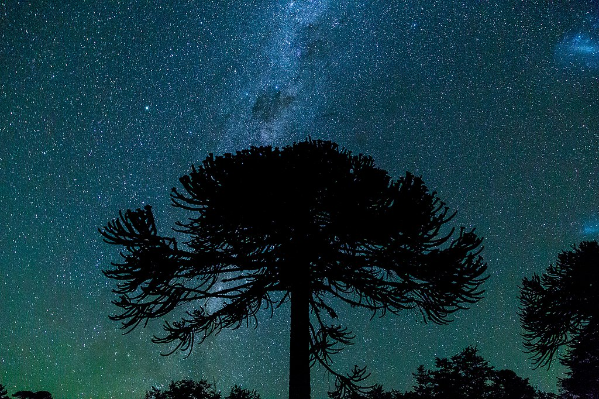

FLORA Y FAUNA DE CHILE: DESDE LA ARAUCARIA AL PUDÚ
AVES NATIVAS Y MEDIAMBIENTE
Araucaria
Distribución
En América se encuentra en el centro-sur de Chile; en Argentina, tanto en la Patagonia como en la selva subtropical serrana del nordeste; en el norte de Uruguay; en Brasil meridional y el Este de Paraguay. En Oceanía está presente en Nueva Caledonia —con 13 especies endémicas—; en la isla Norfolk, Australia oriental y Nueva Guinea. Diversas especies del género se han introducido como plantas ornamentales en Europa y Norteamérica.
Características
El nombre del género deriva de la región de Arauco, pues la especie Araucaria araucana crece en ambas cordilleras de esta zona y los pehuenches ("gente de la araucaria"), integrantes del pueblo mapuche, cosechan las semillas extensivamente para alimento. Muchos lo llaman "piñón", a pesar de que su relación con los pinos (Pinus) es muy lejana. Ellos llaman a este árbol Pehuén y utilizan sus semillas o piñones como principal fuente de alimento y lo consideran un regalo y símbolo de su dios, Ngenechén. Son principalmente árboles grandes con un vástago erguido masivo, alcanzando una altura de 30 a 80 m. Las ramas suelen ser horizontales, y bien separadas; estando cubiertas con hojas coriáceas o aciculares.
En algunas especies, las hojas son lanceoladas y de forma estrecha, traslapándose apenas, en otras son anchas y planas, y se traslapan ampliamente. Los árboles son sobre todo dioicos, los conos masculinos y femeninos se presentan en árboles separados. Si bien, por su lento crecimiento, no tienen la misma difusión que otras especies de árboles ornamentales, es posible ver algunos ejemplares en los grandes parques y plazas de en gran parte del mundo. La cantidad de niveles de sus ramas corresponden a la cantidad de años del árbol.
Pudú
Distribución
La especie Pudu mephistophiles habita en Colombia, Ecuador, Perú y Venezuela, mientras que la especie Pudu puda, de la que el género toma el nombre, solo se encuentra en el sudoeste de la Argentina y en el centro-sur de Chile. En la Argentina, su presencia se extiende desde el Sur oeste de Neuquén hasta el sur oeste de Santa Cruz. En el parque nacional Lanín se lo detectó en numerosos lugares tanto en el norte como en el sur del mismo. El área de mayor concentración de individuos parecería ser la zona oeste de la cuenca de los lagos Epulafquen, Carilafquén y Curruhué.
En Chile, se presenta en poblaciones aisladas, desde la ciudad de Curicó hasta la Región del Biobío y en forma continua desde la Región de la Araucanía hasta la Región de Aysén. El pudú aparenta ser abundante solo en la Isla de Chiloé.
Características
Los pudúes miden entre 60 y 90 cm de largo y 30 a 40 cm de alto, presentan una cabeza corta y un peso entre 7 y 10 kg. El color varía de café rojizo a grisáceo amarillento. Los recién nacidos presentan un tono café rojizo con pequeños puntos blancos o crema dependiendo en cada caso, siendo la gran mayoría blancos.
ARTICULOS RELACIONADOS
EL DESIERTO DE ATACAMA
Autor fotografía: Freddy Alexander Bugueño Tolmo Su flora y fauna está condicionada por la aridez. La vegetación en este lugar, capaz de sobrevivir y adaptarse a su clima extremo, se corresponde con diferentes especies de cactus.
LOS ANDES
Congue fermentum dignissim rhoncus elementum ac nisi, proin phasellus lacinia sed faucibus mauris, taciti scelerisque nulla ornare consequat.
ISLA DE PASCUA
Cubilia elementum posuere arcu rhoncus egestas lectus, diam aliquam laoreet ac eleifend risus, urna auctor inceptos mattis dapibus.